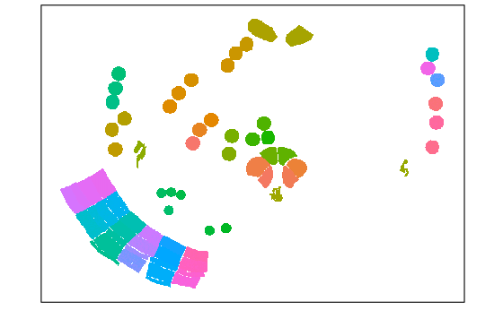

This package is a template for building a Bioconductor workshop. The package includes Github actions to:
This workshop will introduce users to the NanoString R package SpatialOmicsOverlay, which is useful in analyzing images from our GeoMx Digital Spatial Profiler (R) spatial biology platform.
This vignette demonstrates how to use OME-TIFF files generated by the NanoString GeoMx DSP instrument to enhance the data visualization for a NanoString GeoMx experiment. SpatialOmicsOverlay was specifically made to visualize and analyze the free-handed nature of Region of Interest (ROI) selection in a GeoMx experiment, and the immunofluorescence-guided segmentation process. The overlay from the instrument is recreated in the R environment allowing for plotting overlays with data like ROI type or gene expression.
Participants will learn how to interact with OME-TIFF file types and generate informative plots over images. The vignette data is from our repository of GeoMx datasets, called the Spatial Organ Atlas. Each organ profiled in NanoString’s Spatial Organ Atlas (SOA) consists of freely available downloadable data files on 4-13 sections. For this vignette, users will be exploring the mouse brain.
docker run -e PASSWORD=<yourchosenpassword> -p 8787:8787 ghcr.io/nanostring-biostats/soobiocworkshopOnce running, navigate to http://localhost:8787/ and then login with rstudio:<yourchosenpassword>.
NOTE: Running docker that uses the password in plain text like above exposes the password to others in a multi-user system (like a shared workstation or compute node). In practice, consider using an environment variable instead of plain text to pass along passwords and other secrets in docker command lines.
Picture of plot 